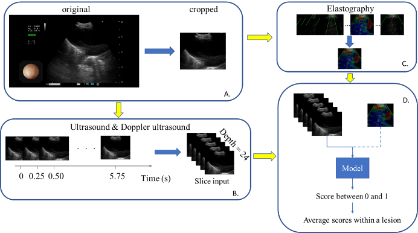
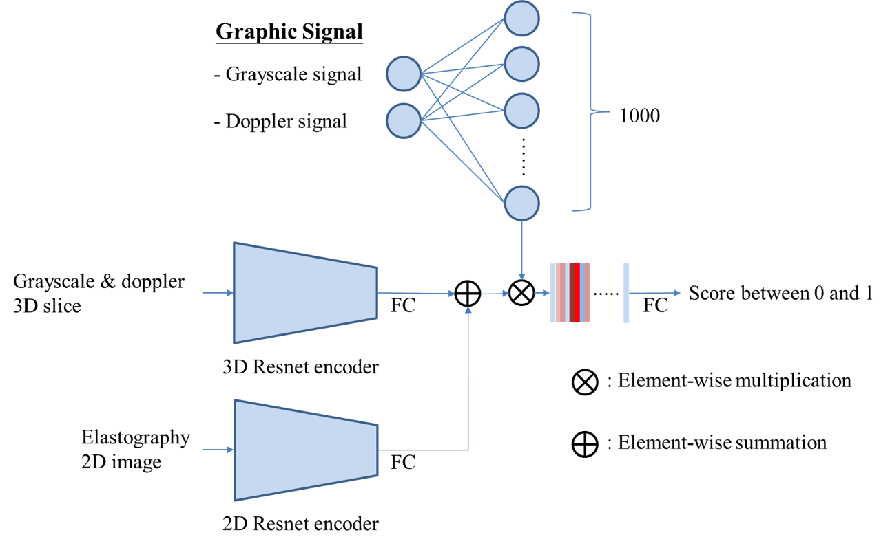

支氣管內視鏡超音波影像病灶區分
The interpretation of endobronchial ultrasound image
摘要
本研究旨在利用三維卷積神經網路透過支氣管內視鏡超音波 (EBUS)之超音波影像區分惡性及良性縱隔腔病灶。Endobronchial ultrasound-guided transbronchial needle aspiration (EBUS-TBNA)為胸腔內淋巴結的超聲波診斷工具，可利用灰階模式、都卜勒模式、彈性成像模式分析病灶特徵，並針對惡性病灶進行切片採樣。然而因術中需結合多種成像特徵來判斷病灶良惡性，因此在病灶判讀上需要許多時間。另外以EBUS影像判讀良惡性需要高度專業知識且準確率低，導致過多陰性病灶的切片次數，延長手術時間。
近年來深度學習(DL)逐漸盛行，卷積神經網路(CNN)在影像處理的領域有十分可觀的進展。若能將深度學習模型結合EBUS-TBNA手術，能夠減少術中病灶判讀時間，並減少過多陰性病灶的切片次數。
在EBUS影像良惡性判讀上，過去有研究利用人工神經網路(ANN)或二維卷機神經網路(2D CNN)架構進行訓練，取得了不錯的準確率。但過去所提出的模型仍需要手動進行挑選資料與前處理動作，臨床使用上，將會造成額外人力負擔，另外以二維架構並未考慮時間序列特徵，將喪失影片中上下文的關聯。

與先前的研究相比，我們以自動化的方式進行前處理與資料篩選。並且為了融合各種成像模式與時間序列特徵，我們以時間序列的三維卷積神經網路(3D CNN)作為模型骨幹設計多種架構，其中Res3D_U以灰階模式作為輸入，測試模型對於灰階模式的特徵提取能力，接下來加入都卜勒模式的Res3D_UD測試模型結合灰階與都卜勒模式的能力，最後是再加入彈性成像的Res3D_UDE。

目前以灰階、都卜勒、彈性成像三種成像模式作為訓練資料的模型(Res3D_UDE)在驗證集中準確率達到82.00 %，曲線下面積(AUC)達到0.83。
本研究直接使用手術時錄製的影片進行訓練與評估，而不會進行太多手動篩選，更適合臨床應用，另外使用3D CNN作為模型骨幹也能有效學習時空特徵進而提升準確率。若應用於臨床，期望未來可輔助導引醫師在檢查過程中快速正確找到目標病灶並進行切片取樣，減少過多陰性病灶的切片次數，進而縮短檢查時間。
關鍵詞：深度學習、肺癌、三維卷積神經網路、支氣管內視鏡超音波檢查、縱膈腔病灶、ROC曲線下面積